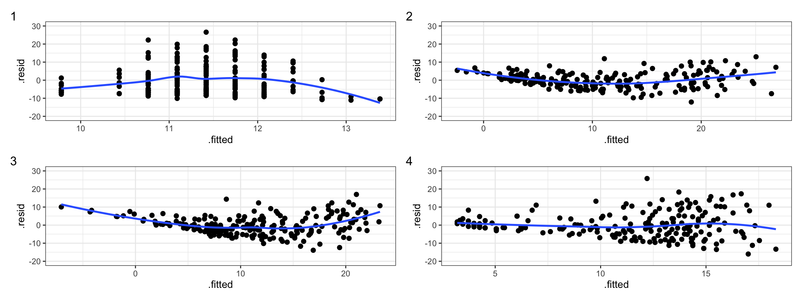

10 L11: The Hat Matrix 2
10.1 Participation Questions
Q1
Which of these does not give the diagonal of the hat matrix?
hatvalues(mylm)diag(X %*% solve(t(X) %*% X) %*% t(X))augment(mylm)$hat
Q2
Removing an outlier will not change:
- The diagonal of the hat matrix.
- The off-diagonal of the hat matrix.
- SST
- All of the above will change if we remove an outlier.
Q3
A large residual means large influence.
- True
- False
Q4
All entries in the hat matrix are between -1 and 1.
- True
- False
Q5
Which plot corresponds to the model with the most predictors?
(All models are nested.)
Q6
In the output of augment() in the broom package, the .sigma column refers to:
- The MSE of the model.
- The MSE of the model if it were fit without the observation in that row.
- The variance of that residual, as calculated by \(V(\hat\epsilon_i) = (1-h_{ii})s^2\).
- The variance of that residual, as calculated by \(V(\hat\epsilon_i) = (1-h_{ii})s_{(i)}^2\).